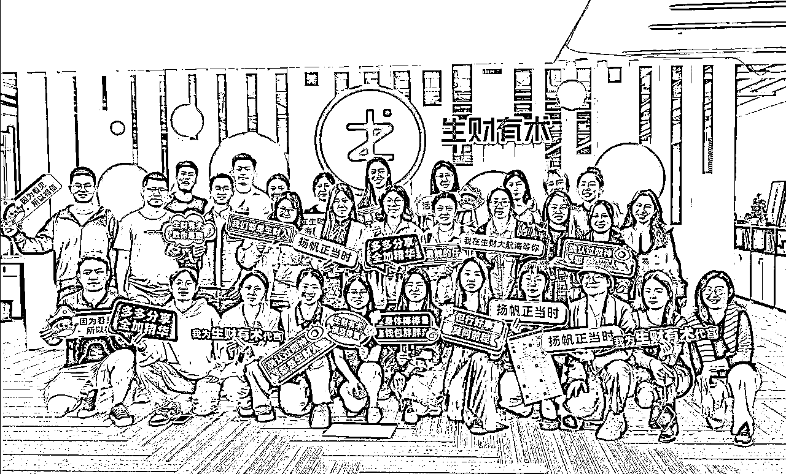
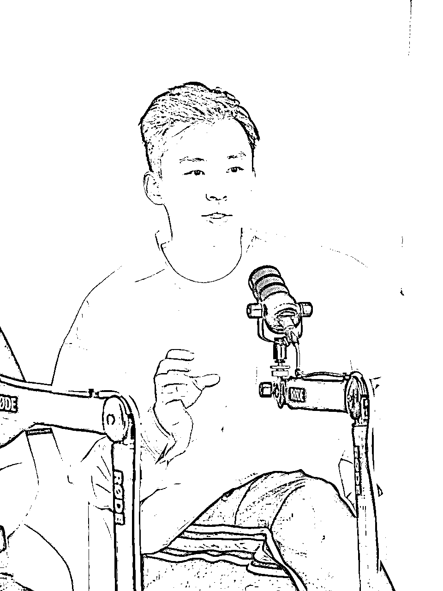
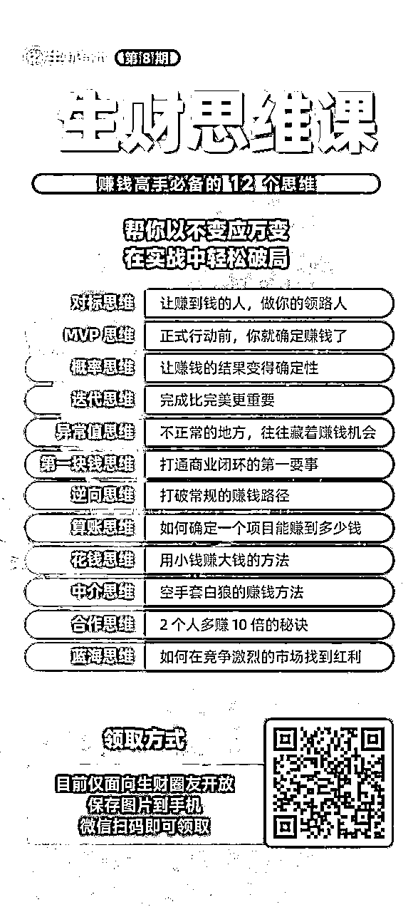
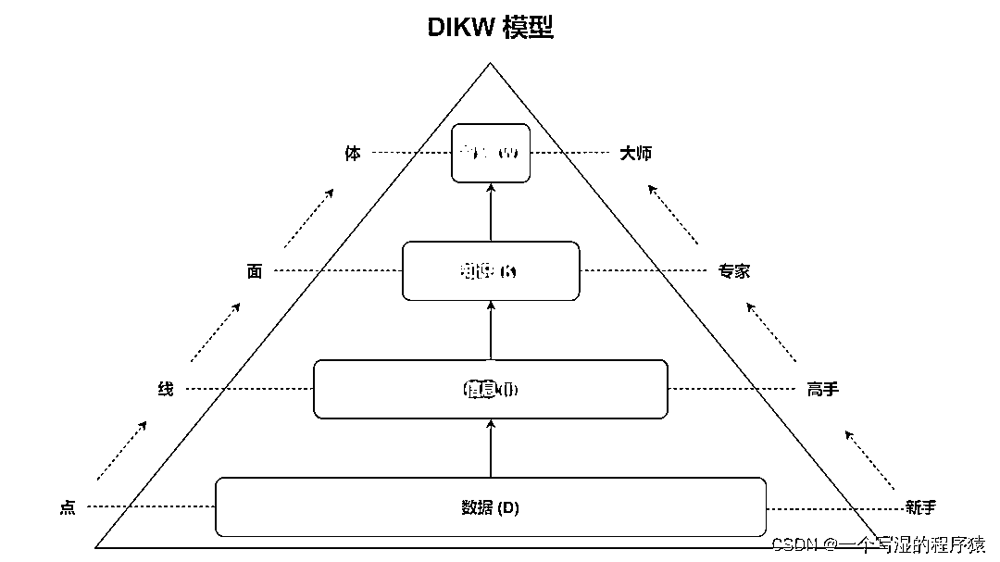
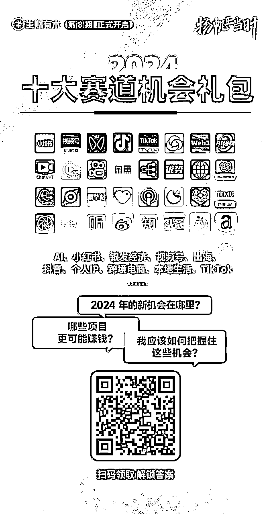

来源：https://aa93zb7jzyz.feishu.cn/docx/PVDCd84UaoVSgUx0AeXcOs76njf

陈雪：最近来了很多新伙伴，但是大家都会有一样的问题：不知道借用生财的空间，怎么去开始？今天特别组织融入局，并且邀请了坤汀和纪钟老师一起来，想跟大家分享，就是怎么用生财有术搭建起自己的一个赚钱模型系统，以及生财第八期有哪些动作，如何抓住机会。

坤汀：
我是坤汀，是生财亦仁的合伙人，现在是生财的COO在管生财的业务。
纪钟：我叫纪钟，是负责整个我们生财的私域，以及会员续费板块，对应的就是帮助大家更好的去了解和使用生财。我讲的这个课程包括，418模型，以及最近推出的生财思维课这个课程。

还没有领取过「生财思维课」的圈友记得领取👆🏻
陈雪：今天希望帮助解决两个方向问题：
一是大家来提出自己的问题，为什么想要加入生财？
二是希望未来一年在生财怎么帮助自己解决问题？
第一个环节先邀请纪钟老师讲一下：你是怎么加入生财和使用生财的？
纪钟：19年刚毕业时，觉得自己收入太低了，很急需扩充自己的收入。别人跟我说是一个搞钱的社群，当时我很想赚钱就加入了。
生财当时对我来说就是索引站，脑子里没有什么赚钱的框架和体系。那时候也没有三天体验营，进来之后就是看帖子，也面临着同样的问题，这么多帖子怎么看，怎么学？从我今天再往回看我当时做了一个很对的动作，是什么呢？从自身出发。
有一个叫模型DIKW，讲的是我们人类去获取信息，一定是要从你自己的原有的认知里面出发。你很难能够去从0构建一套新的认知体系。你都是基于自己现有的这个认知去接触到一些信息，跟原有的知识去做关联。才能够去从可能一些零散的这些文字，数据，然后包括一些看到的一些信息，把它们连接起来，才能变成你的认知路径，以及总结出来的方法论。

因为我当时做销售，我就去看生财里面大家是怎么样去卖东西的，怎么样能够卖的更好。大家可能觉得生财是一个提升赚钱认知，提升你的副业的认知的一个社群。但实际上其实生财第一步是从我们现有的这个工作出发，哪里有提升的这个地方。看到那些厉害的人他们是怎么样去做的。
因为对于生财来说给我们提供了这么多厉害的内容，干货很多。重要的是大家要开始去学习。
当时我印象非常深刻，看到了一个怎么样去给你的用户去做分层的这样的一个这个帖子。看完了帖子之后，我会发现我要去把自己的用户去做分类，那阵我第一个月进公司是底薪是3000，但是第二个月我有了这套分层模型之后，整个的工作效率提升了可能有三倍，通过这套模型我吃到了一些红利之后，我就在生财里面东西继续去学。怎么样提升自己的效率。除了我们的用户问那以外，我又开始去学习这个生产里面有去做这种工具类型的帖子，比如说怎么样去用excel搭建CRM客户管理系统，，能够快速的管理这些用户。那对应的当时我就从零去搭建了一套我们整个客户的CRM的系统。那对应的这一套搭建出来之后的话，其实整个的工作效率又往上翻了几倍。在我进入到公司应该是第四个月的时候，月收入就已经突破3万了。
第二个，就是我慢慢的去了解到，其实生财内部的这个帖子非常多。他们其实自己是有分类的。但是很多人他自己脑海中没有这个大的框架，所以说没有把这些帖子去做分类。没有办法去做分类，你就不知道自己能有哪些能力去看哪些对应的帖子，往里面去做对应的填充。
陈雪：最开始大家会对生财有偏见。怎么会有一个社群教你赚钱！我就觉得大家要有一个意识，生财它是一个教你赚钱的一个社区，一个优质搜索引擎。生财不保证结果。它是一个工具，一个好的工具。我们怎么样把它定义成工具和怎么用这个工具。
纪钟：我们对于生财的定义到底是怎么样的。其实你在通过生财去拿到了一些可能立马帮得上你的东西之后的话，你会发现其实慢慢的就开始有一些迷茫了。因为就是能够帮到你的东西已经看到了，剩下那些东西其实好像离你又很远，那这种情况下我们就会陷入到下一个阶段迷茫，就是我在生财该做什么，还能够去有哪些东西能帮到我。
生财更多的是帮你去搭建整个对于这个商业的认知和体系，还有框架。不应该简单地视生财为工具，而应将其视为实现个人目标的一种手段。
包括我一开始从事的销售工作，它也只是商业环节里面一个细分的环节。看到的商业视角也不全面，而我把这个方面打磨的再好，也只是针对这一环节优化。对于打工是没有问题的。
但对于副业和创业其实是远远不够的。生财能让我们看到说销售这个工作我要是做好了之后，我的这个能力可以再怎么样往上下游发展。
通过不断的去看生财里的帖子慢慢就会发现。它是在帮你扩充你脑中对于整个商业的框架，从前到后慢慢扩充到对于其他环节好像也都知道怎么去做了。后面你搭建完链路之后你就可以尝试做一些其他工作。这种情况下就会发现我们在职场这条来说已经拓展到了前面。能够接触到商业的全貌。
总结来说：首先应该在自己的本职工作上下功夫，找出成功人士的方法并应用于实践。其次，要跳出自身的专业领域，了解整个商业链条的运作方式，从而扩展自己的视野和能力。
最后，将学到的知识和技能应用到实践中，不断试错和学习，以提高自己的变现能力。
陈雪：怎么样提高自己的搜索能力。比如说这位群友，主业是建筑师，但是我感觉我好像找不到类似的人、帖子经验告诉我，我现在这样的身份，到底是学销售还是流量，帖子从哪里开始看？
纪钟：搜商是一个能力。大家刚开始来生财，每个人的搜商能力都是不一样的。我们对应的可以先去学一下百度怎么搜，索引站类似百度，然后用在我们索引站。
第一层，比如像这位圈友说的，是做设计师的，那我做设计我不知道从什么开始看。那你就要去问自己现在做设计的话，做设计有什么变现方式，搜完之就会发现一些跟设计有关的变现方式。
第二层，看了这些帖子就会发现这个变现都有什么项目。比如做设计然后做头像去变现，这时候你就进去到具体的一个项目里面了，对应再去看这个头像变现方式，你会发现怎么去批量去生产对你来说不是卡点。最大的卡点是怎样去起个账号，把流量安全拿到手上。这个情况下变成了，某个平台的流量。
第三层，就是不断去问自己，现在欠缺的是什么能力，要跑通这个项目要去看什么内容，每一层搜索次序是会发生变化的。
背后的核心：大家要要搞清楚你自己对什么感兴趣，或者想去了解什么，搜到对应的信息是很全面的。
坤汀：我们可能在未来几个月会上线一个新的一个功能，就是订阅功能。会通过在在微信生态或者在企微，给大家去去推送一些固定的一些信息，大家可以订阅一些自己感兴趣的赛道和关键字。
陈雪：大家要用什么样的心态，怎么去用，风向标，精华帖和航海呢?
纪钟：我们生财本质上是一个给到大家的一个工具。你是去看自己能力缺哪一块，你就去对应的去这个工具里面去索取。航海是能够带着大家去拿到一些结果，这个我们大家都是有目共睹的。
但是它的最根本的目的一定不是说帮助大家赚到钱。赚钱只是我们了解了一个商业模式之后，我们产生的对应的副产品，它对应的是：帮大家去走通这一个商业模式里面所有的链路和环节。
纪钟：每个人的能力是不一样的。航海的目的是帮大家补差，先让大家感受一下自己现在什么水平，在这21天补一补。
比如有的同学完全没有获取流量的能力，于是跟着航海基础教程，知道了怎么获取流量，这个能力现在可能是20分。但是如果说要到60分才能拿到结果的话，你是一直在提升这个能力的。等到下一次你参加航海，可能报了其他项目，但是这个项目里面依然有搞流量的部分。下一次，你就会发现，我这个导流量的能力从50分变60分，慢慢有流量进来了，虽说还没有变现，至少流量的MVP的部分你已经走通了。
我们说流量运营产品，这一套模式你要怎么样去运营，航海里给到的内容已经给大家提供好了产品。你前面这两个打通了之后，产品一跟上，你就发现能够去完成变现了。那对应这个过程一定是你从前到后都是去以MVP的形式去跑通的
有的同学跑MVP很快，因为之前可能有各个行业的经历。然后在这个过程中不断的把哪一个环节去优化，等到链路走通了，说明你最小的MVP模型已经跑通了。
有的同学是我其实全链路我可能都做过，我也做过一些这个市场。那我要验证的就是这个项目我到底能不能从0到1跑通，我对于商业的理解到底是对不对的。如果说我对商业理解对，那这个项目其实说白了拿到我手里我是一定能够变现的，无非就是多少，那对应的就是你可以去验证自己的认知到底到不到位，这是第二类人
陈雪：我是用户，对我来说生财就像一个大学。航海手册就像一个图书馆，它有特别多的类目。给我们打破了信息茧房。
我们可像借书一样，看完一本手册。可能这次我们没有去做，但是我知道了一些新的知识，多了一些新的谈资。
我们叫做超出建立对这个行业基本的一个认知，我们要建立一个常识。说实话看手册就够了。
坤汀：我们的手册质量真的非常高。但其实本质上来讲，我觉得赚钱这个事情，或者说你想做成一个事情，主动性应该在你的手里。不应该是别人去push你什么的。别人push你的话你是很难去拿到结果的。这个主动性必须放在你自己手上。所以我们就包括航海slogan就是下场把手弄脏。
成败皆为反馈。这个就是这样的。赚钱本身也是一个技能，你去体验它，你去做的过程中，感官脑是比理性脑大很多的。会收到外界各种各样的信息，这些信息给你带来的整个的反馈是比你单纯去看一个东西多的。
陈雪：分享一个，面对航海的心态和姿势。最近很多人要老是问我说五月航海什么时候启动？我一直很想说：航海不是从启航开营才开始的，你随时都可以开始自己的航海。
从你加入生财的那一刻，你就可以开始航海了。如果你想要做，看好哪些机会，你现在就可以看他的过往的航海手册，和过往的精华帖有哪些准备。
就像健身一样，提前你给自己有这么一个“暖身”的一个过程，你会发现在开始行动的时候会比别人要快很多。不要等到拉群才行动，那就晚了。
纪钟：大家对于航海的心态，会进入到的一个思维误区。
自己手里面没有项目的，也不知道怎么挑项目的，觉得航海对于你就是航海实践，对于你挑项目它起到的是一个什么作用？
圈友：听说有航海的时候，会对它有点了解，就像我报了视频号，但我发现了不是我喜欢。要通过剪什么产品，自己选品。我不太喜欢那种感觉。我个人的话比较偏文艺。我就感觉不太适合然后这个项目我就放弃了。
纪钟：虽然说你放弃了，我们不是给放弃掌声，是给你的这个承上启下给一些掌声
航海是给到大家一个环境，里面的很多项目你去挑选做，在这个过程中航海能够帮你去找到那些东西是你喜欢和热爱的。做这件事情，有正反馈，那你就持续做这件事情。
坤汀：我觉得你喜欢很重要，喜欢背后代表一个人的心力。
我觉得心力是做项目最重要的一个事情。心力才能持续做下去。但是我另外提一个视角就是你刚给我的表达里边，我感觉更多的你还是一个消费者的视角。我觉得大家要转变一个思路，如果你们要赚钱的话，一定要从消费者转变成生产者。其实你要站在一个生产的角度去赚钱，去看一个业务，看一个项目。
比如：刚提到的视频号带货。这个项目有很多混剪产生了很多内容，觉得不是那么高大上。这个东西为什么会产生，是因为平台有人喜欢看，平台要推荐商业化所以那样的内容反而会比一些平衡的内容更能吸引到大家的关注和流量，更能去产生一些商业价值，所以这个是平台趋势所决定。
大家得转变一个视角，你们做项目的话得从一个消费者的视角转变成一个生产者的视角。
如果你是一个生产者，你不会想说这玩意不符合我个人的生活品味。而是会去思考消费者需不需这个东西，是为那些消费者服务的，这个产品符不符合目前市场的趋势，什么样的产品做出来可能是符和当下的一个消费者的导向的需求，这个很重要是要消费者导向，而不是自我为中心的导向。而这背后其实是一种身份的转变，是你从一个消费者你要转变成一个生产者这个视角。
纪钟：航海对外我们要赚钱，作为生产者项目没有差别，所有项目你如果是奔着赚钱去的话，都可以做。
以自己当前的状态为主，当下你很缺钱，那就以维持生存为第一要义。
如果短期温饱得到保证，自由率比较高那你这段时间就去探寻自身，我到底是一个什么样的人为什么要做这件事情，来作为我下半辈子赚钱的终局，奔着找答案的视角去看项目。很多人他经常混淆掉了，我既要这个项目要赚钱又要我喜欢，这种项目其实是很难找的。
坤汀： 当你开始做就会有答案了。有些事情做的事情，可能做着做着就讨厌了。
纪钟：这是一个动态发生变化的一个过程。前提是你的能力一点一点往上走，更好的项目，更好的团队，你喜欢的做的事情才会出现。
可以通过设定标准并逐步筛选来实现。重要的是理解不同项目的框架和商业模式，以便更好地把握商机。同时保持对市场的敏感度和适应性，不断学习新技能，以提高自身能力，从而在众多项目中寻找到最适合自己的那个。
陈雪：又要喜欢又要赚钱怎么办？
纪钟：你喜欢并且赚钱的项目一定有的，这种情况下就是你要花时间来找到它。
本质是你有没有那个时间来等到你喜欢的那个项目。你就要适当的在这些标准上你去放低一些。喜欢其实我们说喜欢和赚钱它是分程度的。你一个一年赚赚10万块钱，维持你的温饱是一个程度，一年赚30万能够让你生活实现这个自由，也是一种程度。一年赚百万让你去实现阶层跃迁，这又是另一种程度。你的喜欢，你的热爱，就是每天我就是想要干这件事情，我可以茶不思饭不想是一个程度。
坤汀：可以换一个思路，就是首先要赚钱，那你做到不讨厌就行了~
最低的标准，再一点点往上加，你可以先瞄准你自己要做什么赛道去做。很多项目其实是比较短平快的项目，它是有周期的，这种项目就可能短时间是很赚钱，因为平台的一些政策调整有可能过几年会死掉。
本身做项目它就是一个你得不断跨越这个时期的过程。你前期做的是一些短平快的项目，但是你慢慢要做更多的长期主义的一些业务。那这个中间你怎么去跨越，其实是需要很多的认知和勇气的。
陈雪：而且亦仁也说过一句话，“当你不知道做什么的时候，就随便哪个先开始就行了。因为一定不会是最后的那个。”每个项目都是有周期的，但是每个项目之间赚钱的思路是不变的，只要你在每一个项目里给自己留下些什么可迁移的能力。
坤汀：不同的项目或者一个项目里边是有非常多组件的。你可以把一个业务做成的各个流程理解成各种各样的组件。一个组件背后其实是一个能力。所以你学到了这个能力之后，这些东西有一天会跟你拼成一个适合你的一个业务的。
这个背后每个业务都是有一个框架的。你有了这个有框架性思维，就清楚知道自己的业务背后的那个商业模式和框架是什么。当你去看项目时，首先应该把自己放到框架里面去看，这个框架里面有哪些商业模式、业务选择，再去check,自己适合业务的某个环节，看能不能和自己的业务有一些结合。
纪钟：组件你可以理解为像机器里面的齿轮。你在每一次其实你去做不同项目的时候，你就是在拼凑这个发动机的齿轮。我们说这个不同水平的发动机，它里面是不同的齿轮构成的。你可以理解为100个齿轮的发动机是一个能力，对吧？十个齿轮的发动机又是另一个能力，一个齿轮的发动机它的能力可能是最弱的。你每次在做不同的项目的时候，就是在不断的去捡这些齿轮，把你的发动机拼的更强。
陈雪：大家可能普遍会遇到一个问题，不知道怎么放大。生财里不乏缺能够赚小钱的项目，就是我能够完整的闭环一次，让他可持续怎么放大就不会了。
纪钟：项目跑通了之后面临的一件事情一定是放大。这个时候更考验的是你对于商业的认知、业务的认知，更多的是软实力。而不是硬实力，硬实力可以帮助你跑通这个项目。但是一定是你的一些更大方向的这些东西帮你去放大。
比如说我们跑通一个项目之后，第一步能够把这个项目去抽练成用户他的需求。
第二，你在于对这个解决方案上能够去有什么更多的优化。
第三，你怎么样搭建这个商业模式，你的成本，你的利润，你要去放大的话，你就要去算，比如：招一个人进来，他可以创造多少产值，这种情况下就是需求方案合商业模式的第一层。
第二层，要去做增长怎么做。如果说我们这个市场有红利的话，你就要尽可能的去想办法，赶紧去把这个市场红利抢占完，而不是说还畏畏缩缩的对吧？那这种情况下的话，当然我们说前提你是单位模型要盈利，然后你要尽快的去把钱花出去，这个也是一个放大的方式。
你要去搭建自己的壁垒。比如做项目它的收入是来源于你的时间和劳动力。什么是利润，利润是这个项目的红利才是利润，也就是只有你把这个壁垒搭建起来，才能更好的把这个利润赚到手上。不然的话，你其实后入场的人，他赚的都是一份什么劳动力，就是我花了时间和金钱，这是他应得的。所以说这样的话，他其实那些人赚的是钱，是小钱。你只有头部你有了壁垒的人，他赚的才是大钱，才是利润。
陈雪：作为新群友，生财第八期会有哪些动作，我们怎么能运用好社群的资源，跟着趋势去走？
坤汀：生财第八期提出了下一个七年愿景和目标。帮助大家成立1000家公司。这背后意味着我们会去做很多的投资和孵化。我们围绕这十大赛道去做垂类。
今年已经有三个在进行了，分别是视频号、AI赛道、本地生活。一起去赋能通过具体的商业模式和有效的资源配置促进圈友的发展和成功。
如果我们能通过好的机制把优秀的信息筛选出来，也就是赚钱的机会筛选出来。1000个赚钱机会，1000个靠谱的人，如果我们能很好的匹配在一起，那这就是1000家公司了。这个其实就是明确化了。
就在未来七年，我就能至少帮这1000家公司我能赚赚到钱，这1000家公司的年轻人，一些参与进去的人能赚到钱，这个就是能实现到我们的一个目标的一个方式了。
十大赛道其实是我们看到的有趋势的一个更长期的一个我们值得去布局的一些业务。

我们更多是希望圈友们也主动一些。如果你们手里有好的项目，或者你们觉得自己是优秀的操盘手的苗子的话，那其实就可以主动去链接过来，生财去提供这么一个机制。
陈雪：刚好也给我们提供了一个链路，生财是帮普通人从0到1赚到100万，找副业。航海家是做事业赚到1000万。如果刚好在这个链路里。我们成立给自己的公司，找到自己的一个长期的一个赚钱的机会，就变得清晰了。
1.扩充自己的影响力。
2.很好的起步环境。
3.线下链接更具真情实感，链接更深。
执行力不足往往源于目标不明确或对业务认知不够准确。
1.找到做这件事情发自内心的动力。
比如说跑通视频这个东西，对于你来说，你的预期是要跑通这个项目。那我跑通项目，我为什么要跑通项目呢
要把这个链路去思考下去。找到你自己发自内心的动机，你才能够去把自己的执行力提升上来。
2.确定最终极的目标，拆解目标，明白现在做的事情对目标起到了什么作用。
你的最终极的目标是什么？你现在在干的这件事情对那个目标起到了什么作用？你如果能想明白这件事情，你的执行力才会能够有一些提升。不然的话就要靠什么。
3.精确性越高，反馈密度就会越高
正反馈不足的原因是因为缺乏精确性。就是你对一个业务没有精确性，你没有准确的判断，你都不知道哪个环节做的好，哪个环节做的不好，背后逻辑没有拆清楚。
精确性越高的话，你的反馈密度就会越高。你没有反馈原因是因为你的精确性太差了，所以导致你的反馈密度非常的弱。你的反馈密度只集中在我能不能赚钱这件事情上面，而没有拆到我刚讲的那些颗粒度上面。
4.汇入车流，找到组织。
你不要独立去跑项目，加入航海汇入车流，你找到一个组织。你就会发现就有别人会逼着你去提高自己的执行力
远方的成功与我毫无相关，但隔壁的圈友赚钱了我一定知道。
5.塑造一套你自己获取反馈的方式，才能够去提升你的执行力。
1.先完成一个小的闭环。
比如说，这个项目我要先赚到第一块钱。完成了之后小的执行力就搞定了。就应该把这个小的闭环套到更大的闭环里面。看看自己在圈友中的排名，更厉害的人是怎么做的，这种情况下你就给自己构建了一套不断反馈的流程。
2..知道自己在做这件事情最终的意义。你的执行力是要有地方去的，你要知道你自己在做这件事情最终的意义是什么，你才能持续的去做，不然的话其实就是你哪怕执行下去，也是不断的去消耗自己的执行力。
想要两年50万的话，假设你这两年租房大概10万块，吃饭每天按60块钱算，大概需要5万块，再额外的加个5万块，可能你需要花掉70万到80这两年，然后你第二年赚40到50万的话，你第一年要赚30万，也就意味着每个月要赚2万5。平均每个月赚2万5的，这样的项目在生财库里找就不难了。
你可以多刷一下生财库里面，一个月赚个两三万的，还有很多项目。
首先你看它的整个搭建方案，不是说在基于于某一个平台，某一个运营、某一个产品再去变现。它是结合你现有的这个优势资源。怎么样去扩展流量，怎么样去改变我运营的方式，整个商业模式要重新的去搭建起来。
还可以通过结合专业知识探索更多赚钱的机会，通过公众号、写作等方式实现个人价值和收益。以留学作为个人发展的动力之一，以及如何将自己的目标和过程分享出去，吸引更多志同道合的人一起达成目标。
如果已有项目，聚焦一个项目做下去。你只要在做的话，你就已经成为这个赛道内至少超过90%的人了。因为剩下那10%的人，压根这些信息他都拿不到，你又能再超越这个10%里面的9%了，你就成为人的头部的1%了。
在做的过程中一定会遇到很多问题，就在航海的时候对这个项目感兴趣的人都在这里面，集中提问，互动。小伙伴大家互相去解决，把你这些问题全解决掉。航海结束了之后，你可能又接着自己再去做这个，这才是正确使用航海的方式。
在这个过程中又会遇到好的领队，教练。就可以链接之后一起往下走，就等于你汇入到了车流，之后又开始不断的往头部去赶。进到大部队会有更强的实时反馈和监督。加了杠杆之后的话，你才能够去不断的去做方案
你现有的能力就是你的底牌
任何项目都需要能力，你要把这块能力建设出来，把方法论抽象出来，快速去套用到不同的平台。平台会变的，但是市场需求会变的。没有一直存在的平台，但是有一直存在的需求。就是你有投资能力的话，你就把这个持续性的放大。
1.这个东西是一个框
像我们每个人刚出生的时候，要搭建对这个世界的认知。是来自哪里？是来自于我们的父母、老师、等的一套框架，这个东西的话你要先学习，敬师长，孝顺父母。东西是一个框。先不说好坏，你要先有这个框，世界也会给你框。
但是在商业社会上是没有人给你这个框的，那你自己如果想要提升对商业的认知，探寻商业的本质，这些东西就是你要找自己的那一个框。
这个框怎么找，你要看足够多的内容。比如，这些精华帖的共性是什么？有哪一个点是每个精华帖里面都有的。你如果能把这个问题回答出来，ok你找到一个拼图，但这个拼图它还不是框，你会找完之后的话，你看的越来越多，你做的越来越多，实践发现那块是没有跑通的，没有这块思维或者没有那块拼图导致的。你不断的再去问自己之后，你就会发现，从哪里找拼图，慢慢的这个框就会慢慢显现出来了。
2.跑通一个商业时，对于商业的认知和理解就有了一定的提升。
像这个418模型，是大家使用生财的一个框。
但是我自己去做商业，我自己去做模型，其实我也有自己的这个框，那你如何用好生财，就是把这个框不断的去变成你自己的。因为里面我现在418模型给到你的是三手的体感，你至少要把三手变成二手，二手变成一手，你通过最终真的你自己通过自己的一个这个方和模型，你跑通了一个业务，跑通了一个商业的时候，那你可以说你自己是对于商业的认知和理解有了一定的提升。
3.实际落地下场过程中感受到业务的一些逻辑和框架
直面的业务和实际会的是有区别的。直面的业务就像我得掌握怎么一个好的商业能力，怎么看透一个项目。实际做的业务就是赚钱，这个是更重要的。
4.商业认知的提升。很多人他觉得认知我只要知道，比如说一个业务怎么样去做这东西就已经够了。但实际上其实认知的提升它是分为两个部分的知和行。你一定是认识了某些东西，认识世界改造世界。你在改造世界的这个过程中，你会反馈给你一些认知，那这个情况下的话，你的认知才是真正发生了提升。
1.你要先有赚钱的能力，先学会，不喜欢做可以拒绝。
2.破圈，一定要去获取，一定要有人脉。
3.去执行吸引，在路上遇到同行伙伴
4.敢于尝试举手，愿意展现自己才有更大的空间
文字整理：谢图南